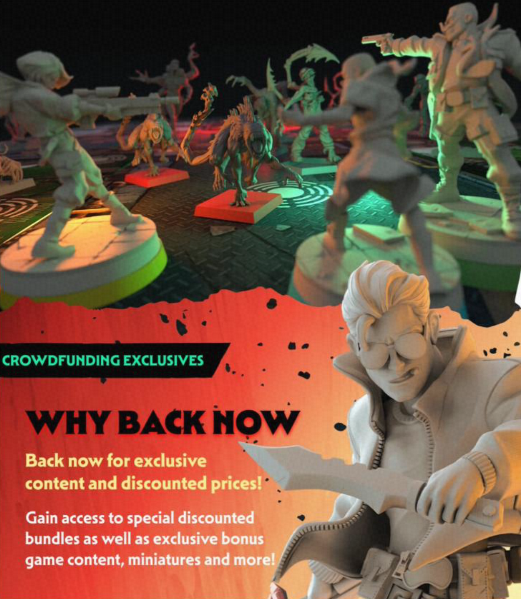
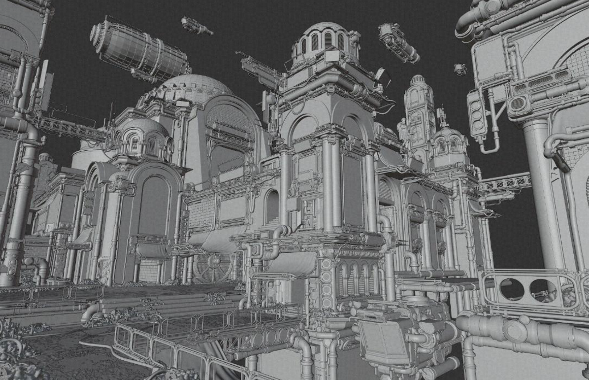
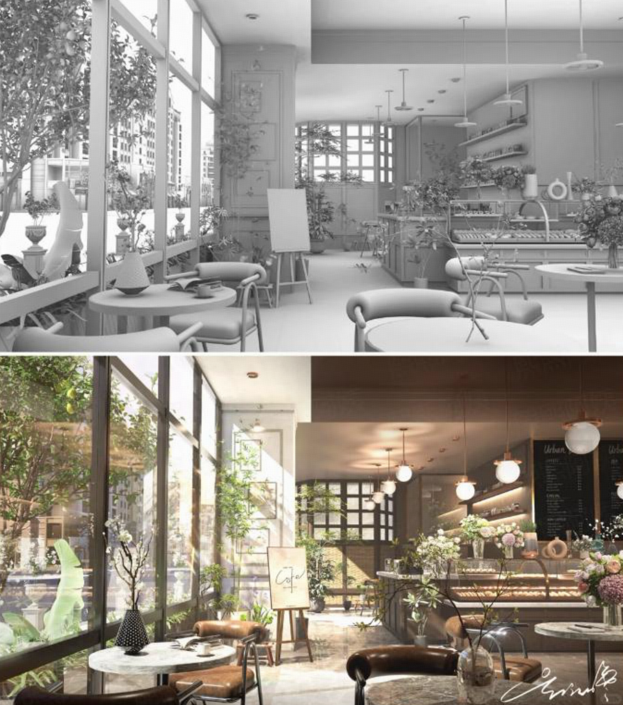
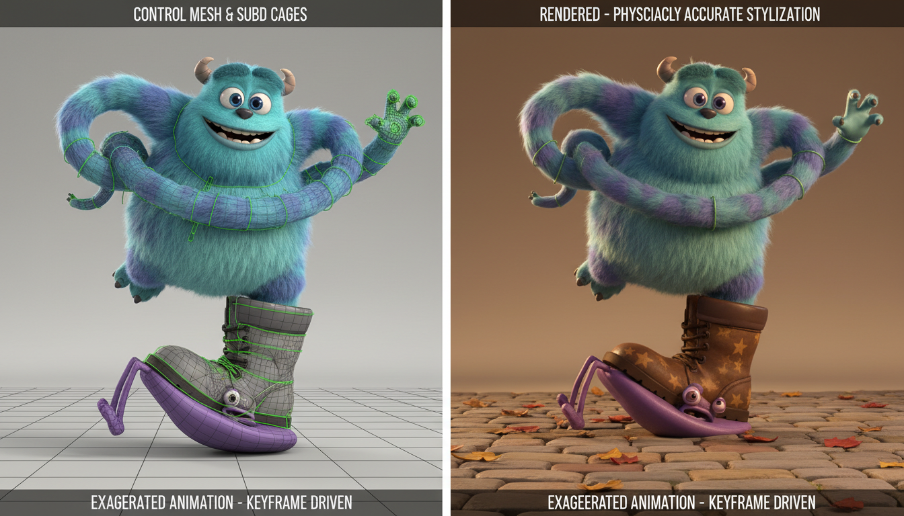
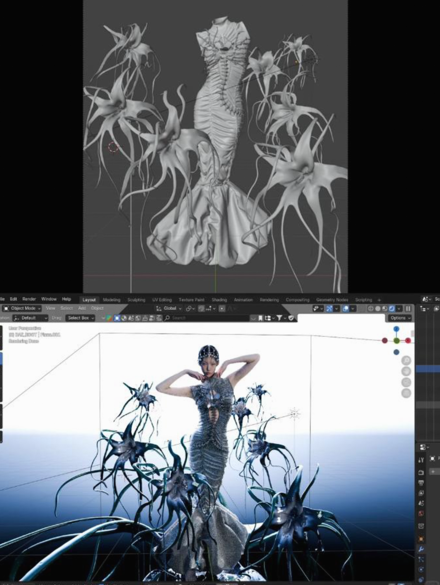
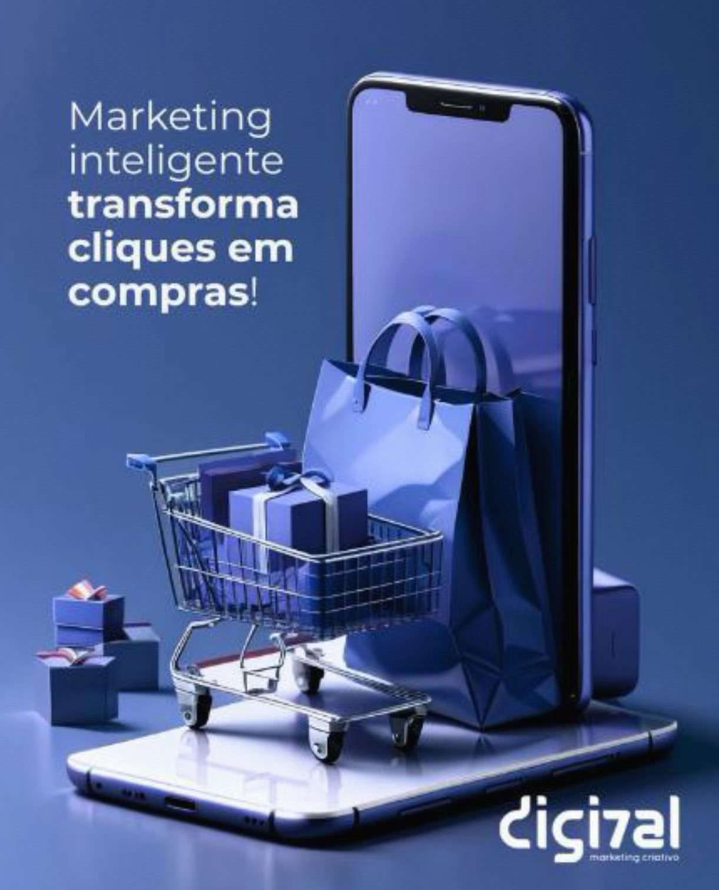
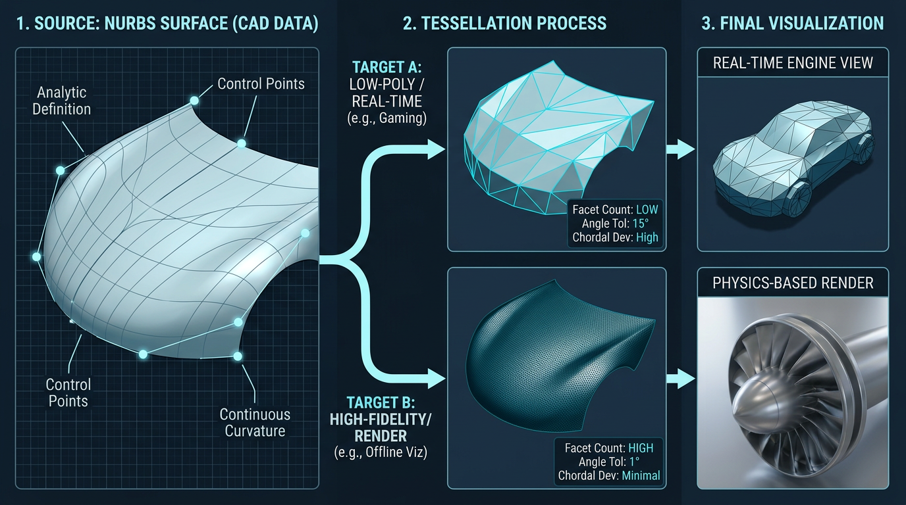
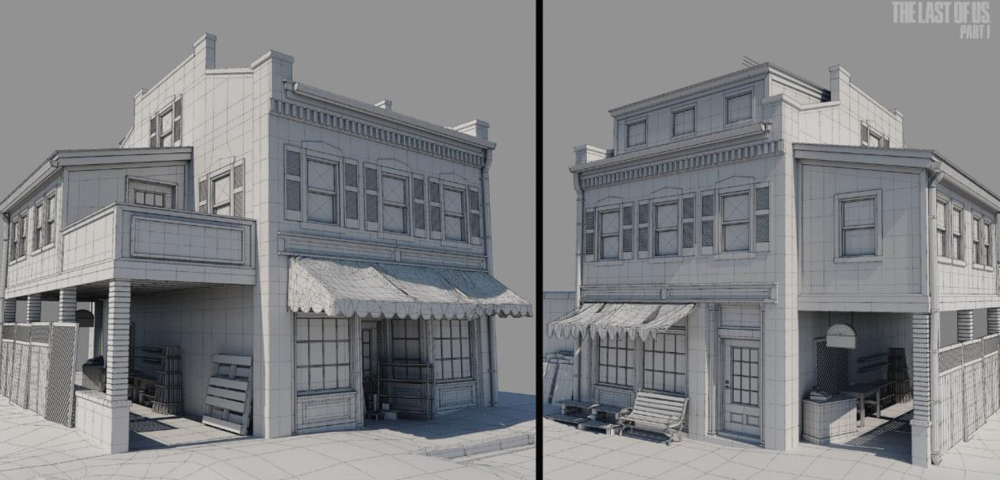
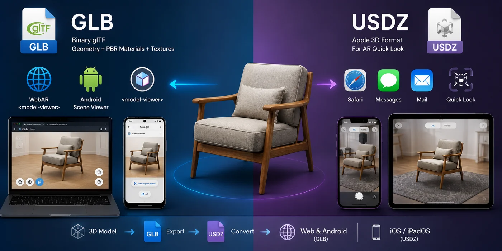

Tripo 九行业分层卖点整理
九个行业：3D 打印、游戏、室内设计、影视动画、时尚设计、产品电商、工业设计、建筑、AR / VR。每个行业都按生产端、消费端、落地端拆解，并明确在行业场景下哪些功能该重点讲，哪些功能不常用，以及为什么不常用。
一页总览：九行业功能优先级
3D 打印、小产品和家居装饰要优先讲水密、白模、拆分、STL/3MF 和打印成功率。
游戏、AR / VR、电商实时预览优先讲 Smart Mesh P2.0 原生四边面、可控面数、局部编辑、批量变体与 GLB / USDZ；只有游戏资产强调桥接到 Unity / UE。
室内、影视、电商主图、时尚视觉优先讲 H3.1、PBR、材质、灯光和高保真展示。
工业与建筑可用 Tripo 做概念和展示，但不能把 AI 网格当作 CAD/BIM 工程母数据。
| 行业 | 最需要功能 | 不常用功能 | 为什么不常用 |
|---|---|---|---|
| 3D 打印 | H3.1 高精度模型生成&高模雕刻、导出白模、拆分补全、STL / 3MF、Bambu Studio | 绑骨与动画、Smart Mesh 生成低模 | 打印优先水密、闭合、厚度与高保真真实几何 |
| 游戏 | Smart Mesh P2.0 原生四边面、可控面数、局部编辑、一次最多 4 个变体、FBX / GLB、DCC 桥接到 Unity / UE | H3.1 约 200 万面直上引擎、全资产 8K | 实时渲染受性能、包体与显存预算限制 |
| 室内设计 | H3.1、PBR / 8K、材质 / 灯光 / 相机预览 | 绑骨与动画、过度低模 | 静态空间更看材质、灯光、比例与曲面细节 |
| 影视动画 | H3.1、多视图生成、绑骨与动画、USD / FBX、DCC 桥接到 Blender / Maya / 3ds Max | 打印拆分、Bambu Studio、纯自动成片 | 高质量镜头仍需绑定、LookDev 和合成 |
| 时尚设计 | H3.1 高精度模型、PBR / 8K 纹理、纹理编辑、多视图生成、OBJ / FBX / GLB | 3D 打印白模、工业 CAD、复杂骨骼 | 时尚更看轮廓、材质、搭配与视觉传播 |
| 产品电商 | H3.1 商品渲染、Smart Mesh P2.0、GLB / USDZ 导出、一次最多 4 个变体 | 打印链路、重工业 CAD、角色动画 | 电商核心是展示、转化与加载速度 |
| 工业设计 | H3.1 高精度模型、重拓扑、Smart Mesh P2.0 快速展示、Blender / 3ds Max 渲染评审、GLB / OBJ / FBX | 替代 NURBS 工业生产 | 工程生产仍依赖 CAD / NURBS / 公差数据 |
| 建筑 | H3.1 建筑展示模型；Smart Mesh P2.0 快速加载展示；多视图提升外观一致性；OBJ / FBX / GLB 进入 DCC 或实时展示流程 | 角色绑定、打印支撑、游戏角色动画 | 建筑主体以概念与展示为主，不是角色或打印管线 |
| AR / VR | Smart Mesh P2.0 原生四边面、可控面数、局部编辑、一次最多 4 个变体、GLB / USDZ | H3.1 高面数直接上头显、8K 泛用 | XR 对帧率、体积与交互稳定性极敏感 |
3D 打印
核心是“能打印、少失败、可定制”。最终交付：制造真实打印实体
生产端
用户画像：创客、教师、学生、Etsy 小店、STL 作者、打印工作室、家居 DIY 用户、小产品设计师。
应用场景：
- 桌游微缩：人物、怪物、地形、战棋配件。
- 手办 / 雕像：IP手办、bust、宠物/情侣/偶像定制摆件、节日礼物。
- 教育：教具、结构模型、科学模型。
- 功能件：替换零件、收纳、支架、夹具、家居小配件。
- 配件收纳：桌游 insert、卡牌盒、模型工具架。
- Diorama微缩：叙事场景、战场地形、恐怖/克苏鲁场景、历史/中世纪场景。
利润需求最高：
- STL 文件（零材料、无库存、可重复销售）。
- 替换零件（小成本解决大损失，利润空间最高）。
- 钥匙扣/定制礼物（低成本、高频送礼、容易批量）
- 首饰/时尚配饰（低材料成本 + 高感知价值）。
- 微缩模型/桌游件（收藏、游戏和社群驱动）。
- 玩具/fidget/动物摆件（可玩、可拍、容易跟热点）。
- 手机和游戏配件（支架、手柄架、卡带盒、人体工学握把）。
- 家居/园艺/工具收纳（线材整理、墙钩、bag clip、测量勺、工具架）。
痛点需求：模型必须可打印，水密、闭合无破面。分件友好，方便上色运输装配。支撑可靠。交付格式全。无侵权风险。
消费端
用户画像：收藏者、礼品买家、桌游/TRPG 玩家、宠物/情侣定制用户。礼品买家、桌游/TRPG 玩家
应用场景：
- Etsy（全球最大手工艺品个性化定制，欧美用户多，更适合创意、礼品和个性化溢价，典型是 articulated animals、fidget toys、婚礼蛋糕 topper、骰子盒/展示架）。
- Amazon Handmade （更适合卖高频实用件，典型是 cable organizer、wall hook、phone stand、厨房夹具）
- Facebook Marketplace（更适合本地测试和不适合跨境运输的订单，典型是 nameplate、garage tool holder、pet tag、car vent mount。）
- Cults（法国平台在法国信号特别强）
- Printables（捷克的3D 打印模型分享社区，德国用户多，日常实用、功能零件）
- MyMiniFactory和Thingiverse （都是一家伦敦公司，因为对买卖双方抽额外佣金，导致价格更高，适合追求高质量的艺术品、游戏微缩模型、桌游角色。免费STL模型最多）
- Patreon（众筹平台，个性化定制需求）
需求原因：比官方成品更便宜或更个性化。能快速获得定制角色、怪物、地形、礼物、宠物纪念品。功能件能解决具体问题，如收纳、替换零件、桌面整理。
要么自己买STL去DIY要么买成品。
传统三维管线
传统流程里模型检查、拆件和切片参数占用大量时间；Tripo 的切入位置见下方“流程管线 × 产品卖点对应”。
流程管线 × 产品卖点对应
- 智能网格（Smart Mesh）：低面数容易让实体表面粗糙、有棱角
- 重拓扑：3D 打印优先保留高精度几何，重拓扑可能破坏原始细节
- 绑骨与动画：打印静物不需要骨骼绑定或动作
英国是 Warhammer 发源地，战棋涂装氛围浓厚；美国、加拿大和英国适合从 DIY 走向 Etsy 小店变现；法国在 Cults / FabLab 和设计感模型上信号强；德国功能件和可打印 STL 文件交易销量高；巴西 / 西语市场适合开箱和社群投放。

游戏
核心是“Smart Mesh 智能网格 P2.0 低模直出 / 重拓扑减面 / 可导入引擎”。最终交付：FBX 或引擎资源。
生产端
用户画像：独立游戏开发者、小型美术团队、UGC 资产作者、Roblox / Fortnite / UEFN 地图作者、MOD 作者、外包资产团队、游戏原型团队、学生和 Game Jam 团队。
做什么：小团队负责把角色、怪物、武器、载具、建筑、环境件、关卡填充物做成可进 Unity / UE 的资产；外包团队负责批量产出风格统一的道具包；UGC 作者负责做 avatar、皮肤、地图装饰和可售卖模板。
应用场景：
- 原型阶段：快速生成 pitch demo、试玩关卡、trailer 里的临时资产。
- 量产阶段：生成武器、宝箱、路障、路灯、家具、建筑立面、植被、怪物变体等中低重要度资产。
- 角色阶段：用多视图或 T-pose 生成主角 / NPC 基础模型，再做重拓扑、绑骨和动画。
- UGC / MOD：给创作者提供可直接上传或二次编辑的头像、皮肤、地图组件和装饰件。
- 资产商店：制作低模包、风格化道具包、场景包、怪物包和主题化模板。
产业背景：游戏产业已经从“大作自研美术”扩展到“自制 + 外包 + 资产商店 + UGC 创作”混合模式；Unity Asset Store、Fab / Unreal 生态和大量独立开发工具链，把“买资产、拼资产、改资产”变成常态。
痛点需求：实时游戏资产不能把几十万到 200 万面的高模直接绑定或进引擎；普通道具优先采用 Smart Mesh 智能网格 P2.0 的原生四边面或三角面低模直出，重要资产再做减面 / 重拓扑，并进入绑定、动画、LOD、碰撞体和引擎测试流程。P2.0 支持三角面最高 50K、原生四边面最高 25K，在可控面数下输出规整 edge loop，便于后续 LOD 与游戏生产。
消费端
用户画像：独立游戏主创、发行 / 运营团队、关卡设计师、技术美术、虚拟世界搭建者、UGC 买家、MOD 玩家、VRChat / avatar 创作者、教育用户和普通玩家。
应用场景：
- 直播 / 社媒：创作者用游戏角色和场景做短视频、封面、虚拟直播背景。
- 虚拟世界：买房间组件、互动道具、舞台和社交空间素材，做 Roblox / VRChat / 元宇宙房间。
- UGC / MOD：给创作者提供可直接上传或二次编辑的头像、皮肤、地图组件和装饰件。
代表平台：Unity Asset Store 更适合 Unity 原生项目、移动游戏、独立开发和快速原型；Fab / Unreal 生态 更适合 Unreal、3A 外包、影视化实时内容和高保真场景；Sketchfab / Web 预览链路 更适合浏览器看样、资产评审、教育和营销展示；CGTrader / TurboSquid 更适合跨软件买卖、外包补件和非引擎优先的模型采购。
消费市场背景：资产消费正在从专业游戏公司扩展到独立开发者、UGC 创作者、虚拟社交用户和教育用户
需求原因普通玩家购买模型资产更多是出于兴趣或者学习目的。
传统三维管线
流程管线 × 产品卖点对应
- H3.1 高精度模型：最高约 200 万面，不能直接作为实时游戏引擎交付资产
- 高面数模型直接绑定：绑定和动画前应先减面 / 重拓扑，避免性能和拓扑问题
- 全资产 8K 贴图：只适合核心资产静态展示，泛用会增加包体和显存压力
- STL / 3MF：不支持导出骨骼和动画，不适合作为游戏动画交付格式
北美和欧洲更适合中高预算独立游戏、虚幻引擎、虚拟制作和外包采购；日本更偏角色、怪物、二次元、移动游戏和轻量素材；韩国更偏角色、美术效率、网游运营和虚拟社交；东南亚和拉美更常见低成本原型、手游、UGC 和素材拼装型团队。

室内设计
核心是“高精度家具、PBR 材质、灯光相机预览”。最终交付：效果图、漫游或空间展示资产。
生产端
用户画像：室内设计师、软装设计师、家具品牌、电商家居卖家、建筑可视化团队、家装公司、地产样板间团队、民宿 / 酒店空间运营者。
做什么：设计师用 3D 家具和软装资产做提案；家具品牌把 SKU 做成 3D / AR 展示；家装公司用空间模型讲方案；电商卖家把沙发、椅子、灯具、柜体、地毯、摆件做成可配置视觉资产。
应用场景：
- 家具：沙发、椅子、床、柜体、餐桌、灯具、卫浴和厨房小件。
- 软装：摆件、墙饰、植物、地毯、窗帘、挂画、桌面装饰。
- 空间：样板间、民宿、酒店、办公室、咖啡店、展厅和商业空间。
- 电商：同一家具的颜色、材质、尺寸和场景搭配图批量生成。
- AR / 漫游：把家具资产导出到 Web、AR 试摆或实时漫游场景。
产业背景：家居零售和装修决策高度依赖视觉化，IKEA、Wayfair 等家居场景已经教育用户用 AR / 3D 先看摆放效果；设计端也在从静态效果图走向实时漫游和可交互方案。
痛点需求：需要保证家具曲面、布料褶皱、木纹、金属、玻璃、皮革反射和空间比例自然可信；如果模型比例不准、材质不真实、透视不自然，会直接影响客户信任和成交。需要更快出提案、更低成本做 SKU 视觉资产、更少依赖摄影棚和实物打样，并让客户在签单前理解风格、尺寸和材质。
消费端
用户画像：房主、装修客户、租房改造用户、房产客户、家居买家、民宿房东、办公室采购、设计感内容消费者。
为什么买：消费者买的是“决策确定性”：确认沙发放不放得下、颜色会不会冲突、风格是否统一、预算花出去之后是否后悔。
应用场景：
- 装修前效果预览：客厅、卧室、厨房、儿童房和小户型改造。
- 家具购买：看尺寸、材质、颜色、摆放距离和与旧家具是否搭配。
- 样板间 / 民宿：比较不同风格，决定软装投入和拍照传播效果。
- 远程沟通：业主、设计师、施工方异地同步方案。
- 社媒内容：Instagram、Pinterest 风格图和改造前后对比。
消费市场背景：线上家居购买增长后，用户无法触摸和试摆，退换货成本高；3D 预览和 AR 试摆变成降低犹豫、提升转化和减少售后争议的关键工具。
需求原因：提前看见效果，降低装修和购买决策风险；最怕图好看但实际尺寸、色差、材质和空间压迫感不符合预期。
传统三维管线
流程管线 × 产品卖点对应
- 智能网格（Smart Mesh）：低面数可能无法充分呈现家具曲面与细节
- 绑骨与动画：家具和室内模型通常为静态展示，不需要骨骼绑定和动画
英国法国适合高端独立站和自由职业设计师；韩国适合现代家居和快速提案；巴西适合家装改造和社媒展示；德国做实时漫游时要强调轻量和格式稳定。

影视动画
核心是“高保真细节、多视图、受限范围绑骨动画、USD / FBX”。最终交付：镜头级资产或动画素材。
生产端
用户画像：VFX 团队、动画工作室、广告制作公司、短视频团队、虚拟人团队、虚拟制片团队、概念设计师、导演组预演团队、品牌内容工作室。
做什么：影视团队做怪物、道具、场景、角色替身和镜头预演资产；动画团队做风格化角色和环境；广告公司做产品广告里的夸张道具、虚拟场景和社媒短片；虚拟人团队做 avatar、服饰、舞台和表演道具。
应用场景：
- 前期开发：概念图转 3D，用于导演沟通、分镜、预演和 pitch。
- VFX 制作：怪物、飞船、武器、雕像、场景碎片、背景建筑和镜头道具。
- 动画短片：风格化角色、宠物、表情道具、场景资产和循环动作。
- 广告 / MV：品牌产品放大展示、超现实场景、舞台装置和动态海报。
- 虚拟人 / VTuber：角色配饰、直播场景、节日皮肤、粉丝礼物和活动素材。
产业背景：虚拟制片、实时渲染和短视频广告让影视资产需求从“大项目少量高精”变成“多项目、高频、快速迭代”；小团队也开始用 UE、Blender、C4D 和 AI 工具完成接近工作室级的视觉内容。
痛点需求：模型要服务绑定、动画、灯光、渲染和合成；写实镜头需要高精度细节和 PBR 材质，可动画资产仍需关注拓扑、骨骼适配、表情空间、贴图清晰度和版权安全。目的是降低概念验证成本、加快资产试错、让导演和客户更早看到可旋转的 3D 形态，并把模型顺利交给绑定、动画、灯光、渲染和合成团队。
消费端
用户画像：广告主、品牌方、动画观众、虚拟主播粉丝、游戏和动漫粉丝、短视频用户、活动观众、IP 衍生品买家。
为什么买：品牌方买的是传播效率和视觉记忆点；粉丝买的是角色陪伴、身份认同和收藏价值；内容团队买的是更短周期内形成“看起来完成度高”的画面。
应用场景：
- 角色短片：原创角色、宠物、怪物、吉祥物和剧情道具。
- 虚拟偶像 / VTuber：直播间背景、服饰配件、舞台、节日皮肤和粉丝互动礼物。
- 广告片：产品拟人化、包装变形、超现实空间和 3D 动态海报。
- 社媒传播：TikTok / YouTube Shorts / B站 / 小红书里的循环动画、封面和互动素材。
- IP 衍生：把角色资产延展为头像、贴纸、周边概念、AR 滤镜或 3D 打印摆件。
消费市场背景：短视频广告、虚拟主播和粉丝经济把 3D 角色资产的消费门槛降低，视觉内容越来越追求高频更新和可复用角色，而不是只在院线级项目里使用。
需求原因：买的是角色记忆点、画面完成度和传播效果；对画面完成度敏感，最怕角色不稳定、模型不能动、贴图粗糙、风格不统一或侵权风险影响上线。愿意为喜欢的角色和 IP 付费、习惯通过短视频和直播接触 3D 内容；年轻用户更接受虚拟偶像、虚拟宠物和数字周边。
传统三维管线
流程管线 × 产品卖点对应
- 智能网格（Smart Mesh）：低面数无法满足高保真细节和影视级渲染
- 非 T-pose 人类 / 非标准站立四足模型绑骨：不在当前绑骨适用范围内
- STL / 3MF：不支持导出骨骼和动画，不适合作为影视动画交付格式
日本适合二次元、怪物、三渲二和 VTuber；韩国适合高完成度角色短片和团队提效；法国偏作者感和艺术动画；北美适合独立短片和游戏宣传。

时尚设计
核心是“参考图、高清模型、PBR 纹理、导出展示”。最终交付：配饰概念、视觉展示或电商资产。
生产端
用户画像：服装设计师、鞋包配饰设计师、数字时尚创作者、潮牌团队、电商视觉团队、游戏皮肤团队、虚拟偶像团队、买手店和品牌营销团队。
应用场景：
- 服装概念：廓形、领口、袖型、褶皱、装饰结构和系列主题。
- 配饰产品：鞋、包、首饰、眼镜、帽子、腰带、手表和香水瓶。
- 数字时尚：avatar 服饰、虚拟试穿、游戏皮肤、虚拟秀场和虚拟偶像造型。
- 营销内容：新品发布、社媒海报、橱窗视觉、短视频转场和 3D Lookbook。
- 电商资产：同一款式的颜色、材质、金属件、纹理和搭配组合快速生成。
产业背景：时尚行业正在把 3D 打样、虚拟试穿和数字营销前置到设计链路；快反品牌和潮牌需要更快测试风格，数字时尚和游戏皮肤则让“服饰资产”从实体商品扩展为虚拟身份商品。
痛点需求：需要快速把 moodboard / 参考图变成 3D 概念，并保留轮廓、纹理、金属、皮革、织物和材质表达；服装本体若要真实穿着仿真仍需要 CLO / Marvelous 等专业布料流程，Tripo 更适合概念、配饰和展示资产。使用目的是降低样衣和拍摄成本、缩短从 moodboard 到可展示 3D 概念的周期、支持跨部门评审，并把 3D 资产复用于广告、电商、游戏和虚拟社交。
消费端
用户画像：时尚消费者、潮流玩家、虚拟形象用户、游戏皮肤买家、社媒内容消费者、粉丝、礼品买家和品牌会员。
为什么买：消费者买的是审美表达、身份标签、稀缺感和社交展示；品牌方买的是新品热度、预售转化和更低成本的视觉传播素材。
应用场景：
- 配饰预览：鞋、包、首饰、眼镜和帽子的多角度查看。
- 虚拟穿搭：avatar 换装、社交头像、虚拟直播造型和游戏角色皮肤。
- 新品发布：数字 Lookbook、3D 海报、AR 滤镜、直播间展示和橱窗屏幕。
- 定制消费：刻字首饰、限定鞋配色、包挂、徽章和粉丝周边。
- 社媒传播：用户用 3D 穿搭和虚拟配饰做短视频、封面和个人风格表达。
消费市场背景：线上时尚消费越来越依赖视觉内容，游戏、虚拟偶像和社交平台把服饰的价值从保暖 / 使用扩展到身份表达；虚拟试穿和 3D 预览能降低犹豫，但仍要解决材质可信和尺码预期。
需求原因：买的是审美表达、身份标签和新鲜感；最怕 3D 图与实物质感不一致、试穿效果不可信、风格不够独特或版权 / 品牌元素不安全。
传统三维管线
流程管线 × 产品卖点对应
- 非角色类的鞋包配饰使用绑骨与动画：当前绑骨主要适用于 T-pose 人类和标准站立四足动物
- STL / 3MF 导出：不支持骨骼和动画，不适合虚拟穿搭动画交付
- 智能网格低面数：高端鞋包、首饰和布料褶皱展示可能损失细节
西班牙适合数字时尚、配饰和艺术装置；韩国适合潮流视觉和快速上新；日本适合二次元服饰和虚拟偶像；北美适合 DTC 品牌和社媒广告。

产品电商
核心是“商品可信展示、高清 PBR、轻量 Web 预览”。最终交付：渲染图 / GLB / USDZ。
生产端
用户画像：独立站卖家、电商品牌、广告代理、产品摄影和渲染团队、家居 / 美妆 / 3C 品牌、Shopify / Amazon 卖家、跨境电商团队、包装设计公司。
做什么：品牌方把商品做成 3D 主图、详情页素材、360 度展示、颜色变体和 AR 预览；代理公司做广告短视频和社媒素材；跨境卖家把新品在实物拍摄前先做视觉测试；包装团队做瓶罐盒袋的材质和结构展示。
应用场景：
- 商品主图：家居、鞋包、首饰、美妆、3C、玩具、礼品和小家电。
- 详情页：拆解结构、材质特写、尺寸对比、卖点动画和使用场景。
- 变体展示：颜色、材质、花纹、套装、配件和限定款批量生成。
- Web 3D / AR：网页 360 度查看、手机 AR 试摆、试戴 / 试放和互动配置器。
- 广告内容：短视频、产品爆炸图、包装转场、众筹页和新品预售页面。
产业背景：电商竞争从“有图”升级到“可交互、可试摆、可配置”；Shopify、Apple Quick Look、Google model-viewer 等生态让 GLB / USDZ 商品资产更容易进入网页和移动端。
痛点需求：需要同时满足高质量商品展示和手机端轻量化实时加载：近景要有清晰纹理和 PBR，网页端要控制面数和贴图大小，格式要兼容 GLB / USDZ / FBX，且不能夸大实物效果。目的是降低摄影棚、样品寄送和重拍成本，提升电商转化，减少因尺寸 / 材质误解带来的退货，并让同一 3D 资产复用于主图、广告、AR 和配置器。
消费端
用户画像：线上购物用户、家居买家、鞋包配饰买家、美妆用户、礼品用户、众筹支持者、定制商品买家、对图片真实性敏感的高客单用户。
应用场景：
- 家居摆放：沙发、灯具、柜子、桌椅、装饰画和园艺用品。
- 穿戴查看：鞋、包、眼镜、首饰、手表和帽子多角度检查。
- 美妆包装：口红、香水、护肤品瓶罐、礼盒包装和限定套装。
- 礼品定制：刻字、照片浮雕、宠物纪念、婚礼礼物和企业礼品。
- 众筹 / 预售：买家在没有现货时通过 3D 图理解产品结构和真实体积。
消费市场背景：线上购物无法触摸实物，退货、差评和客服问题常来自尺寸、色差、质感误解；3D / AR 商品展示能把“看图猜”变成“旋转看、放进家里看、按配置看”。
需求原因：确认尺寸、材质、颜色和摆放效果，降低图片不可信带来的犹豫；最怕模型太假、加载太慢、颜色和实物不一致或 AR 尺寸不准。
传统三维管线
最终交付通常同时包含主图、视频、GLB、USDZ 和配置器资产。
流程管线 × 产品卖点对应
- 角色绑骨与动画：普通商品展示多为静态模型，只有角色或动物商品才需要
- H3.1 高面数模型直接用于手机端实时 AR：加载性能压力大，应转轻量模型
- STL / 3MF：用于 3D 打印交付，普通 Web 商品预览更常用 GLB / USDZ
美国适合 Shopify、独立站和 UGC 商品广告；英国适合高端独立站视觉服务；德国强调格式和加载速度；西班牙适合时尚配饰；土耳其适合低成本商品图。

工业设计
核心是“高保真概念、重拓扑、网格化展示”。最终交付：渲染评审或跨平台展示资产。
生产端
用户画像：工业设计师、产品经理、结构工程师、汽车 / 机械团队、消费电子团队、家具工厂、硬件创业团队、展会演示团队、售前技术团队。
做什么：设计师做产品外观和系列概念；产品经理做评审用视觉样机；工程团队做非制造级展示模型、培训模型和部件说明；销售团队做展会、招投标和客户沟通用 3D 演示。
应用场景：
- 消费电子：耳机、音箱、遥控器、按钮、接口、外壳和桌面配件。
- 汽车 / 出行：外观概念、内饰组件、轮毂、座椅、仪表、充电桩和展示模型。
- 机械设备：罩壳、控制面板、机械臂外观、传感器、工具头和培训演示件。
- 家具 / 家电：椅子、灯具、小家电、收纳件和系列化造型探索。
- 市场测试：同一产品多风格、多配色、多比例生成，用于内部评审和用户调研。
产业背景：制造业产品开发越来越强调快速迭代和数字样机，工业设计前端需要大量“看起来可信、能沟通方向”的 3D 概念；但真正投产仍依赖 CAD、工程约束、公差和材料工艺。
痛点需求：更快从草图 / 参考图进入可旋转方案，减少物理样机次数，降低跨部门沟通成本，并把概念模型复用于渲染、展会、培训、售前和说明书。工业设计数据严谨性高，要服务造型、结构、装配、公差和制造；Tripo 更适合概念、渲染评审、网格化展示和营销培训，不适合直接替代 STEP / IGES / SolidWorks / Creo 的制造级 CAD 数据。
消费端
用户画像：品牌方、制造企业、采购团队、经销商、展会观众、培训学员、评审委员会、众筹支持者和企业客户。
应用场景：
- 内部评审：设计、产品、工程、市场和老板快速比较方案。
- 客户提案：售前把设备、零部件或硬件产品讲清楚。
- 展会展示：大屏旋转模型、爆炸图、功能动线和产品系列墙。
- 培训说明：维修、安装、安全操作和部件识别。
- 众筹 / 预售：在模具和量产前展示外观、功能和尺寸感。
消费市场背景：硬件和设备销售越来越依赖数字化展示，尤其远程销售、国际展会和线上发布会需要在没有实物或不方便运输时讲清产品。
需求原因：买的是概念验证、展示效率和沟通成本下降；最怕模型看起来像玩具、比例不可信、无法解释结构逻辑，或被误认为可以直接制造。
传统三维管线
流程管线 × 产品卖点对应
- 直接替代 STEP / IGES / CAD 母数据：产品介绍中的导出格式不包含 STEP / IGES，工程生产仍依赖 CAD / NURBS / 公差数据
- 绑骨与动画：工业产品多数用于外观、结构和展示评审，不是角色动画主流程
- STL / 3MF：只在快速原型或打印验证时使用，不是工业设计评审的通用交付格式
德国最适合强调工程严谨、拓扑、格式和 XR 培训；加拿大适合空间计算和工业 XR；美国适合硬件创业和众筹视觉资产；土耳其适合教育和低价试用。

建筑
核心是“参考图转模型、展示模型、DCC 后处理”。最终交付：概念体块、立面展示或汇报资产。
生产端
用户画像：建筑师、概念设计师、建筑可视化团队、地产营销团队、展陈空间设计师、城市更新顾问、景观团队、BIM / 数字孪生展示团队。
做什么：建筑师做体块和外立面概念；可视化团队做汇报模型、动画和效果图资产；地产营销团队做售楼处、样板区和线上楼盘展示；展陈团队做展馆、城市沙盘和互动屏素材。
应用场景：
- 概念体块：住宅、商业综合体、展馆、学校、办公楼和公共建筑早期方案。
- 立面构件：幕墙、窗墙、屋顶、入口、栏杆、装饰构件和街区界面。
- 地产营销：楼盘外观、景观节点、售楼处、样板区和宣传片模型。
- 城市更新：旧改街区、商业街、滨水空间、公共艺术和社区汇报。
- 实时展示：Web 3D、UE 漫游、展厅互动屏、数字沙盘和投标演示。
产业背景：AEC 行业正在从传统效果图走向 BIM、数字孪生和实时可视化；但早期概念和营销汇报仍需要大量非施工级、可快速迭代的视觉模型。
痛点需求：需要快速表达体块和外观风格，但施工、结构、机电、造价和 BIM 数据仍需 Revit / Rhino / SketchUp / Archicad 等专业软件完成；Tripo 更适合概念外观、展示资产和汇报素材。
消费端
用户画像：地产公司、业主、政府 / 竞标评审、公众展示观众、购房者、商业空间租户、投资方和社区居民。
应用场景：
- 方案汇报：业主会、投委会、政府报批前沟通和竞赛答辩。
- 竞标视觉：快速比较不同风格、体量、立面和商业氛围。
- 地产销售：楼盘外观、景观、公共空间、商业街和会所展示。
- 公众沟通：城市更新、社区改造、公共建筑和展馆方案说明。
- 线上看房：远程客户通过 3D / VR / 视频理解项目空间。
消费市场背景：地产和城市更新项目沟通周期长、参与方多，3D 可视化能把专业图纸转译成可被普通人理解的视觉语言，尤其适合线上销售和公众展示。
需求原因：看懂建筑方案，快速比较风格，降低沟通成本；最怕模型结构逻辑不可信、比例失真、被误认为施工模型，或无法和现有 BIM / DCC 流程衔接。
传统三维管线
最终交付包含效果图、漫游、投标动画、BIM 模型或数字孪生展示。
流程管线 × 产品卖点对应
- 绑骨与动画：建筑主体通常是静态展示，不是角色或四足动物绑定场景
- STL / 3MF：仅在实体沙盘或打印原型时需要，且不支持骨骼动画
- HD Model 直接用于实时漫游：高面数会增加加载压力，应按实时展示需要转轻量资产
英国适合地产营销和高端建筑可视化；韩国适合现代商业空间表现；德国更看重结构逻辑和技术可信；北美适合地产、展馆和城市更新 pitch。

AR / VR
核心是“Smart Mesh 智能网格 P2.0、轻量实时资产、GLB / USDZ”。最终交付：渲染图 / GLB / USDZ。
生产端
用户画像：XR 应用团队、Unity / UE 开发者、Vision Pro / Quest 内容团队、虚拟偶像团队、电商品牌、展厅团队、工业培训团队、教育机构、VRChat / 社交 VR 创作者。
做什么：XR 团队做可实时加载的空间道具、培训模型和交互资产；电商品牌做 AR 商品预览；虚拟社交创作者做 avatar、服饰、房间装饰和世界组件；企业团队做培训、展厅、远程协作和数字孪生展示。
应用场景：
- AR 商品：家具试摆、鞋包查看、美妆包装、3C 产品和家电展示。
- VR 空间：展厅、培训场景、会议空间、游戏关卡、社交房间和品牌体验店。
- avatar：人物、四足宠物、服饰、配饰、舞台、表情道具和粉丝互动资产。
- 工业培训：设备结构、操作步骤、危险场景、安全演练和维修说明。
- 教育展陈：博物馆、学校实验、城市规划、文旅导览和沉浸式课程。
产业背景：Quest、Vision Pro、移动 AR 和 WebXR 推动空间内容需求增长，但硬件性能、加载速度和用户眩晕问题让“轻量可实时运行”比单纯高精度更重要。
痛点需求：VR / AR 对帧率、加载速度和交互稳定性要求高，必须优先轻量化实时资产：减面、重拓扑、控制贴图、合并材质、检查尺度和碰撞，再导出 GLB 或 USDZ。但如果是渲染好的VR/AR影片,需求又变成资产精细度要求
消费端
用户画像：Quest / Vision Pro / 移动 AR 用户、虚拟社交用户、VRChat 玩家、购物用户、品牌粉丝、企业培训学员、展厅参观者和学生。
应用场景：
- 虚拟空间装饰：房间、展厅、舞台、桌面摆件、宠物和互动道具。
- AR 商品预览：把家具放到家里、把鞋包配饰放到身体或桌面环境里看。
- VRChat / avatar：形象、服装、饰品、动作、表情道具和世界组件。
- 培训体验：工厂设备、医疗演示、安全演练、维修流程和新员工培训。
- 展厅体验：品牌快闪、博物馆、地产沙盘、车展和教育互动屏。
消费市场背景：空间计算让 3D 资产从“屏幕里看”变成“放在现实或虚拟空间里用”；但用户耐心低，加载慢、卡顿、比例不准和交互不自然会快速破坏体验。
需求原因：买的是沉浸感、互动感和身份表达；最怕资产太重导致掉帧、贴图糊、手机打不开、USDZ / GLB 不兼容或 avatar 绑定失败。
传统三维管线
流程管线 × 产品卖点对应
- H3.1 高精度模型直接上头显：高面数对实时渲染性能压力大，VR / AR 对帧率要求高
- 非 T-pose 人类 / 非标准站立四足模型绑骨：不在当前绑骨适用范围内
- STL / 3MF：不支持导出骨骼和动画，且不是 AR / VR 主流交付格式
加拿大和德国适合 XR / 工业培训；北美适合游戏和电商 AR；日本适合虚拟偶像、VRChat 和二次元 avatar；韩国适合虚拟人和娱乐内容。
